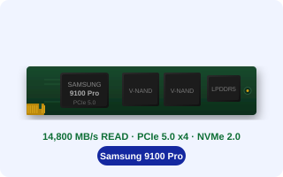

삼성 9100 Pro를 장착하면서 가장 먼저 확인해야 할 것이 발열 대응입니다.
PCIe 5.0 x4 컨트롤러는 PCIe 4.0 세대보다 전력 소비가 크고, 그만큼 발열도 높습니다.
히트싱크 없이 쓰면 성능이 제한될 수 있습니다.
어떻게 대응해야 하는지 정리했습니다.
▣ 핵심 3줄 요약
- PCIe 5.0 x4 컨트롤러는 연속 부하 시 70~85°C에 달할 수 있습니다. PCIe 4.0 세대 대비 발열이 크게 증가했습니다.
- 써멀 스로틀링이 발동되면 속도가 자동 제한됩니다. 히트싱크는 선택이 아닌 강력 권장 사항입니다.
- 메인보드 내장 히트싱크가 있다면 그대로 사용, 없다면 aftermarket M.2 히트싱크를 별도 준비하세요.

①세대별 발열 비교
| 9100 Pro (PCIe 5.0) | 연속 부하 시 약 70~85°C
히트싱크 없는 환경 기준 |
|---|
| 990 Pro (PCIe 4.0) | 연속 부하 시 약 50~65°C |
|---|
| 870 EVO (SATA) | 연속 부하 시 약 35~45°C |
|---|
| 차이 이유 | PCIe 5.0 컨트롤러 TDP 증가, 더 높은 전송 속도 유지에 필요한 전력 소비 증가 |
|---|
②발열 수치 — 연속 부하 시
70+°C
연속 대용량 이동 시 컨트롤러 온도 (히트싱크 없는 환경 추정)
메인보드 내장 히트싱크 적용 시 10~20°C 이상 낮아질 수 있음
써멀 스로틀링이란:
온도가 임계값을 초과하면 컨트롤러가 자동으로 클럭을 낮춰 속도를 제한합니다.
데이터 손실 없이 안전하게 동작하지만, 이 구간에서 성능이 일시 저하됩니다.
히트싱크를 사용하면 스로틀링 발동 빈도를 줄여 최고 성능을 더 오래 유지할 수 있습니다.
③히트싱크 선택 — 내 환경에 맞는 방법
01메인보드 내장 M.2 히트싱크 있는 경우
대부분의 2022년 이후 고급형 메인보드에는 M.2 슬롯 위에 히트싱크 커버가 포함됩니다.
써멀패드가 포함되어 있으며, 9100 Pro에 바로 적용 가능합니다.
추가 구매 불필요. 메인보드 메뉴얼에서 써멀패드 두께를 확인하세요.
9100 Pro는 M.2 2280 규격입니다.
02메인보드 히트싱크 없는 경우
aftermarket M.2 히트싱크를 별도 구매하세요.
알루미늄 방열핀 타입이 일반적이며, 5,000~15,000원 수준에서 구할 수 있습니다.
써멀패드 두께는 0.5~1.0mm 사이를 선택하세요.
너무 두꺼우면 M.2 고정 나사가 닿지 않을 수 있습니다.
03미니PC / 슬림 케이스 환경
공간 제약이 있는 환경에서는 저프로파일 히트싱크가 필요합니다.
일부 미니PC는 M.2 슬롯 위 공간이 5mm 이하로 제한됩니다.
미니PC에 9100 Pro를 설치하기 전에 M.2 슬롯 위 여유 공간을 반드시 측정하세요.
공간 제약이 심하다면 발열 관리가 어려울 수 있습니다.
④발열 관리 실전 팁
✅ 발열 관리 잘 되는 환경
- 메인보드 내장 히트싱크 적용
- 케이스 통풍 양호 (전면/후면 팬)
- 간헐적 대용량 작업 패턴
- 케이블 정리로 공기 흐름 확보
⚠️ 발열 위험 환경
- 히트싱크 없이 장착
- 밀폐 케이스 + 팬 없음
- 24시간 연속 대용량 부하
- 슬롯 주변 부품으로 공기 차단
⑤설치 전 체크리스트
히트싱크 준비
메인보드에 M.2 히트싱크가 내장되어 있는가?
없다면 aftermarket M.2 히트싱크를 준비했는가?
써멀패드 두께(0.5~1.0mm)를 확인했는가?
환경 확인
M.2 슬롯이 PCIe 5.0 x4를 지원하는가?
메인보드 메뉴얼 또는 제조사 스펙 페이지 확인 필요
▣ 오늘 내용 요약
- PCIe 5.0 SSD는 PCIe 4.0 대비 발열이 크게 증가합니다. 9100 Pro는 히트싱크 없이 사용 시 써멀 스로틀링 위험이 있습니다.
- 메인보드 내장 히트싱크가 있다면 그대로 적용하세요. 없다면 5,000~15,000원 수준의 aftermarket 히트싱크를 준비하세요.
- 케이스 통풍과 히트싱크를 함께 관리하면 9100 Pro의 최고 성능을 더 오래 유지할 수 있습니다.
💬 여러분 메인보드에는 M.2 히트싱크가 기본 장착되어 있나요?
히트싱크 유무와 메인보드 모델을 댓글로 알려주시면 다음 콘텐츠에 참고하겠습니다!
출처
삼성전자 공식 사이트 (9100 Pro 제품 페이지) — 2025년 2월
퀘이사존 — PCIe 5.0 SSD 발열 분석 리뷰 — 2024~2025년
본 글은 공개된 공식 스펙 및 실사용 후기를 바탕으로 작성됐습니다. 발열 수치는 환경에 따라 다를 수 있습니다.
#삼성9100Pro
#PCIe5SSD발열
#M2히트싱크
#SSD발열관리
#써멀스로틀링
#내장SSD설치
#9100Pro히트싱크
#PCIe5.0
#SSD온도
#삼성내장SSD
#고성능SSD발열
#M2SSD